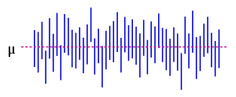
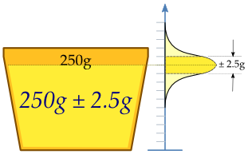

estimated range of values which is likely to include an unknown population parameter
if CI actually contains the population parameter → observed data will not be considered particularly unusal
useful to estimate the interval that a population parameter may take after the intervention of an independent variable on a known population
calculated from the observations: in principle different from sample to sample
addres the issue of how well the sample statistic estimates the underlying population value
are constructed at a confidence level (c), such as 95%, selected by the user not by data
increase in \(n\) will decrease length of CI without reducing confidence confidence
Confidence level (c)
The confidence level describes the uncertainty associated with a sampling method, it is a proportion that reflects how frequently the observed interval contains the population parameter. I.e., that if the same population is sampled on numerous occasions and interval estimates are made on each occasion, the resulting intervals would bracket the true population parameter in approximately c% of the cases

The blue vertical line segments represent 50 realizations of a confidence interval for the population mean \(\mu\), represented as a red horizontal dashed line; note that some confidence intervals do not contain the population mean, as expected.
where \(n\) is the size of sample used to construct the CI
This interval is only exact when the population distribution is normal. For large samples from other population distributions, the interval is approximately correct by the Central Limit Theorem.
Understanding confidence intervals
Cups filling machine
A machine fills cups with a liquid, and is supposed to be adjusted so that the content of the cups is 250 g of liquid. As the machine cannot fill every cup with exactly 250.0 g, the content added to individual cups shows some variation, and is considered a random variable \(X\). This variation is assumed to be normally distributed (although this assumption is not necessary for the theory to work) around the desired average of 250 g, with a standard deviation, \(\sigma\), of 2.5 g.

To determine if the machine is adequately calibrated, a sample of \(n = 25\) cups of liquid are chosen at random and the cups are weighed. The resulting measured masses of liquid are \(X_1, \ldots , X_{25}\), a random sample from \(X\). To get an impression of the expectation \(\mu\), it is sufficient to give an estimate. The appropriate estimator is the sample mean. The sample shows actual weights \(X_1, \ldots , X_{25}\), with mean:
$$\hat{\mu} = \bar{X} = \frac{1}{25} \sum^{25}_{i=1} x_i = 250.2 \text{g}$$
If we take another sample of \(25\) cups, we could easily expect to find mean values like \(250.4\) or \(251.1\) g. A sample mean value of \(280\) grams however would be extremely rare if the mean content of the cups is in fact close to \(250\) grams. There is a whole interval around the observed value \(250.2\) grams of the sample mean within which, if the whole population mean actually takes a value in this range, the observed data would not be considered particularly unusual. Such an interval is called a confidence interval for the parameter \(\mu\). The endpoints of the interval have to be calculated from the sample, so they are statistics, functions of the sample \(X_1, \ldots , X_{25}\) and hence random variables themselves.
In our case we may determine the endpoints by considering that the sample mean \(\bar{X}\) from a normally distributed sample is also normally distributed, with the same expectation \(\mu\), but with a standard error of:
$$SE = \frac{\sigma}{\sqrt{n}}=\frac{2.5 \text{g}}{\sqrt{25}} = 0.5 \text{g},$$
by standardizing, we get a random variable:
$$Z = \frac{\bar{X} - \mu}{SE} = \frac{\bar{X} - \mu}{0.5}$$
dependent on the parameter \(\mu\) to be estimated, but with a standard normal distribution independent of the parameter \(\mu\). Hence it is possible to find numbers \(−z\) and \(z\), independent of \(\mu\), between which \(Z\) lies with probability \(1 − \alpha\), a measure of how confident we want to be.
We take \(1 - \alpha = 0.95\), for example. So we have:
$$P \left( -z \leq Z \leq z \right) = 1 - \alpha = 0.95,$$
The number z follows from the cumulative distribution function, in this case the cumulative normal distribution function:
$$CDF(z) = P \left( Z \leq z \right) = 1 - \frac{\alpha}{2} = 0.975,$$
$$z = CDF^{-1}(0.975) = 1.96,$$
and we get:
$$\begin{array}{rcl}
0.95 = 1 - \alpha = P \left( -z \leq Z \leq z \right) & = & P \left( -1.96 \leq \frac{\bar{X} - \mu}{SE} \leq 1.96 \right) \\
& = & P \left( \bar{X} - 1.96 \frac{\sigma}{\sqrt{n}} \leq \mu \leq \bar{X} + 1.96 \frac{\sigma}{\sqrt{n}} \right)
\end{array}$$
In other words, the lower endpoint of the 95% confidence interval is:
$$\text{Lower endpoint} = \bar{X} - 1.96 \frac{\sigma}{\sqrt{n}}$$
and the upper endpoint of the 95% confidence interval is:
$$\text{Lower endpoint} = \bar{X} - 1.96 \frac{\sigma}{\sqrt{n}}$$
With the values in this example, the confidence interval is:
$$0.95 = P \left( \bar{X} - 0.98 \leq \mu \leq \bar{X} + 0.98 \right)$$
As the standard deviation of the population σ is known in this case, the distribution of the sample mean \(\bar{X}\) is a normal distribution with \(\mu\) the only unknown parameter.
Interpretation
This might be interpreted as: with probability 0.95 we will find a confidence interval in which the value of parameter μ will be between the stochastic endpoints:
$$\bar{X} - 0.98 \, \text{and} \, \bar{X} + 0.98$$
This does not mean there is \(0.95\) probability that the value of parameter \(\mu\) is in the interval obtained by using the currently computed value of the sample mean. Instead, every time the measurements are repeated, there will be another value for the mean \(X\) of the sample. In \(95\%\) of the cases \(\mu\) will be between the endpoints calculated from this mean, but in \(5\%\) of the cases it will not be. The actual confidence interval is calculated by entering the measured masses in the formula. Our \(0.95\) confidence interval becomes:
$$\left( \bar{X} - 0.98 , \bar{X} + 0.98 \right) = \left( 250.2 - 0.98 , 250.2 + 0.98 \right) = \left( 249.22, 251.18 \right)$$
As the desired value \(250\) of \(\mu\) is within the resulted confidence interval, there is no reason to believe the machine is wrongly calibrated. The maximum error is calculated to be \(0.98\) since it is the difference between value that we are confident of with upper or lower endpoint.
The calculated interval has fixed endpoints, where \(\mu\) might be in between (or not). Thus this event has probability either \(0\) or \(1\). One cannot say: "with probability \((1 − \alpha)\) the parameter \(\mu\) lies in the confidence interval." One only knows that by repetition in \(100(1 − \alpha) \%\) of the cases, \(\mu\) will be in the calculated interval. In \(100\cdot \alpha \%\) of the cases however it does not. And unfortunately one does not know in which of the cases this happens. That is (instead of using the term "probability") why one can say: "with confidence level \(100(1 − \alpha) \%\), \(\mu\) lies in the confidence interval."